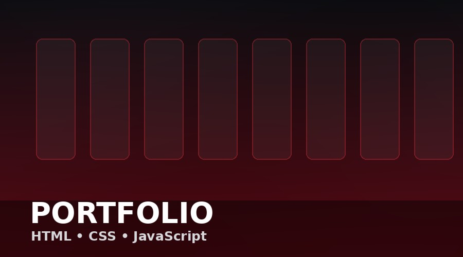
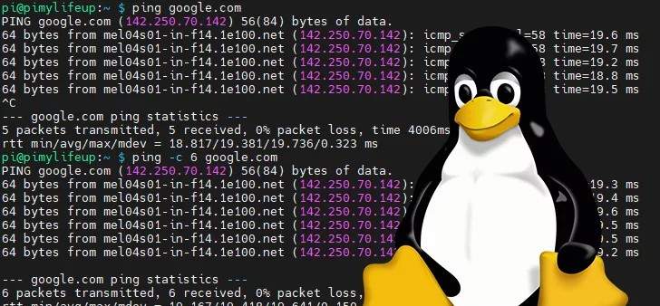
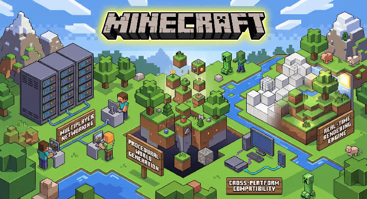
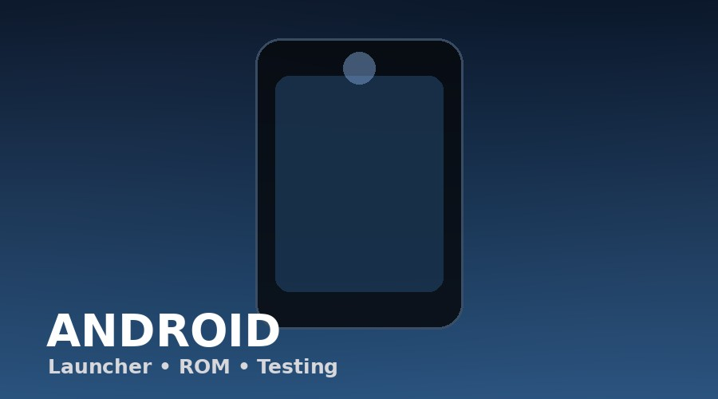
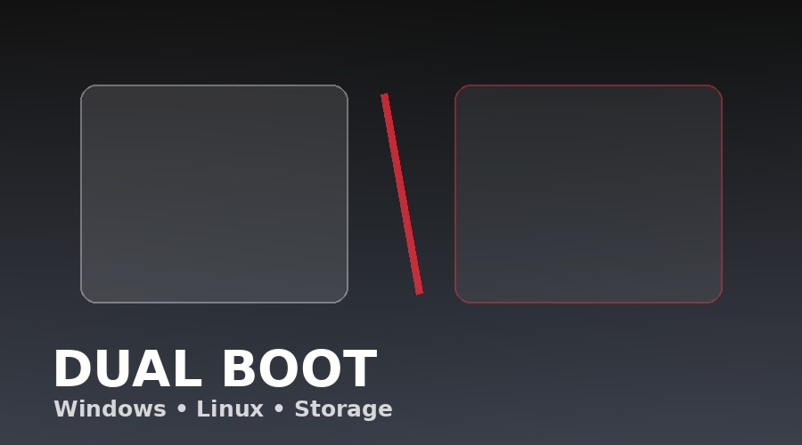

Profile
My projects.
A collection of websites, system experiments, servers, and other things I've built or tested.
01
Web
Linux
Gaming
Android
Systems
Personal Profile Website
HTML, CSS and JavaScript profile UI with responsive design.

02Linux Experiments
Distribution testing, terminal work, configuration and system setup.

03Minecraft Server
PaperMC, Java, networking and self-hosting experiments.

04Android Experiments
Launcher tuning, Android customization and mobile testing.

05Dual Boot Setup
Windows and Linux partitioning experiments.
